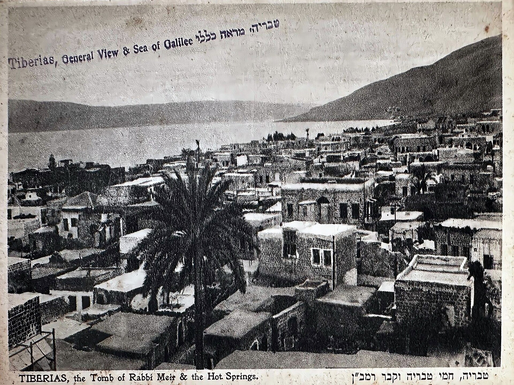

A Collection of Small Things
2026-08-24
Let us begin with a defense of the junk drawer, because every collection I have ever loved started there.
Not the grand collections — not stamps in hinged albums or coins in velvet trays, though those are fine and their keepers are happy. I mean the modest ones. A shoebox of postcards never sent. Ticket stubs going back twenty years, the ink fading on the oldest like they're shy about it. A coffee can of matchbooks from restaurants, half of which no longer exist. A row of stones on a windowsill, each one, to anyone else, a stone.
To anyone else. That phrase is the whole subject of this essay.
An autobiography you can hold
A diary records what you thought. A collection records where you were standing when you thought it, which is sometimes the more honest document.
Take the ticket stubs. I cannot always remember the films, and in a few cases the stubs are the only evidence the evening happened at all. But I remember who sat next to me for most of them, and the stub — that flimsy, perforated little receipt — is the coat-check ticket for the memory. Show me the postcard from a seaside town, bought and never mailed because the trip ended before the errand did, and the whole afternoon comes back: the gulls, the terrible coffee, the friend who insisted the water wasn't cold and then proved, loudly, that it was.
This is why collections resist tidying advice. The decluttering shows would hold up the coffee can of matchbooks and ask whether it sparks utility, and it does not, and that is not the test. The test is whether the object still opens its door. A collection of small things is a filing system for a life, organized not by importance but by touch. Every item in it is a handle.

Photo: Wikimedia Commons
The hunt is the hobby
Ask a collector about their best piece and watch what happens: you will not hear about the piece. You will hear about the finding of it.
The flea market at seven in the morning, when the good tables are still being unpacked and the dealers are drinking coffee and pretending not to watch each other. The junk shop in a town you were only passing through, where the thing you had been vaguely wanting for years sat mispriced and dusty behind something uglier. The estate sale where you understood, standing in a stranger's hallway among their own small things, that you were looking at the same impulse from the other end of life — and that it deserved gentleness.
There is a wonderful amount of this impulse documented, if you go looking: Smithsonian Magazine has spent years telling the stories of unlikely collections and the people who keep them, from vintage lunchboxes to pencil sharpeners, and the stories are never really about the objects. And anyone who reads HISTORY for long will notice how often the past is reconstructed from exactly this kind of humble evidence — a menu, a stub, a postcard — the small things that survived because somebody, for no defensible reason, kept them. Museums run on the leftovers of a million junk drawers. Today's shoebox is tomorrow's archive, which is not an argument for keeping everything. It is an argument for keeping the right few things on purpose.
Rules for a collection nobody else wants
Mine, for what they are worth, after years of keeping small things:
Keep it small enough to hold. A collection that needs storage unit has stopped being a hobby and started being a landlord. The shoebox, the windowsill, the one drawer — those limits are not a compromise; they are the editing that makes the collection mean something. When the box is full, something new must be wonderful enough to retire something old, and that negotiation is the collection thinking about itself.
Keep it cheap enough to be fearless. The great advantage of collecting postcards, stones, matchbooks, and stubs is that ruin is impossible. You can buy the wrong one. You can overpay by a whole dollar. The stakes are so low that the pleasure stays pure, unpolluted by investment anxiety. The moment a collection needs insurance, it has changed hobbies on you.
Keep it yours. The collection nobody else wants — the unglamorous category, the thing with no market and no community and no price guide — is the one worth keeping, because it can only be about you. Nobody collects smooth stones from trips to impress an appraiser. The value is entirely in the keeping, and value that cannot be sold also cannot be lost.
What the small things are for
Someday the shoebox will be opened by someone else, the way I have opened a grandparent's drawer and found the saved string, the foreign coins, the key to nothing anyone could identify. And I have decided I am at peace with that scene, because I know how it goes from the inside: the person opening it will not see clutter. They will see a life, told in the objects it paused for.
That is all a collection of small things ever was. Not an investment, not a display — an autobiography written in the only tense objects know, which is the past, kept within arm's reach of the present. A postcard, a stub, a stone. Small things, heavily annotated by having been loved.
Add one more. There's room in the box. There's always, somehow, room in the box.